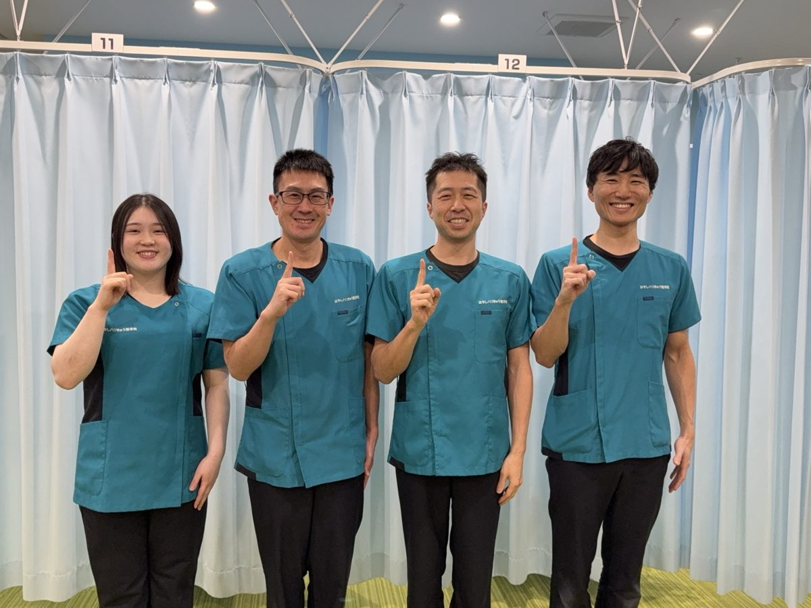
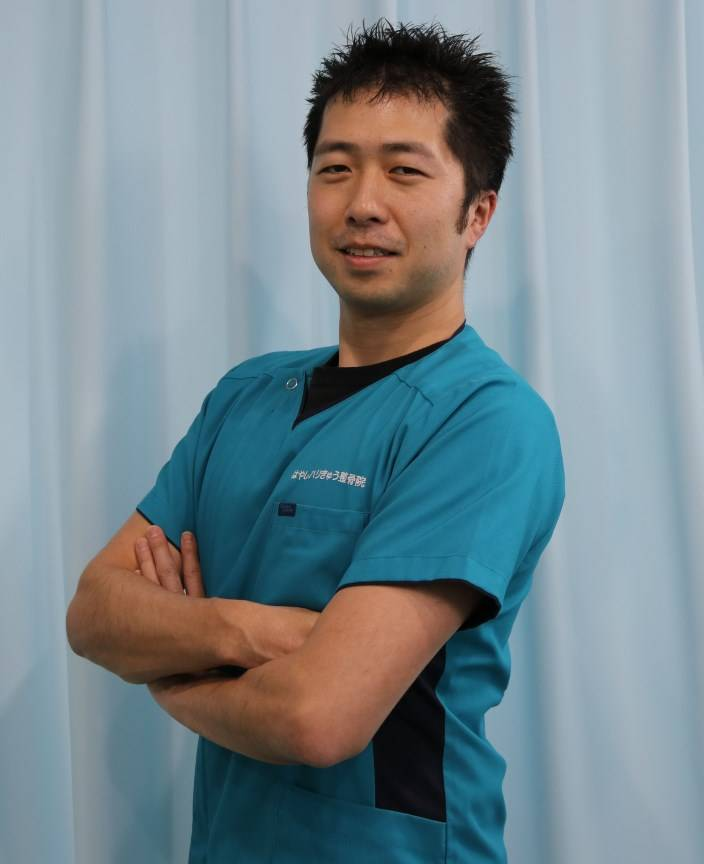
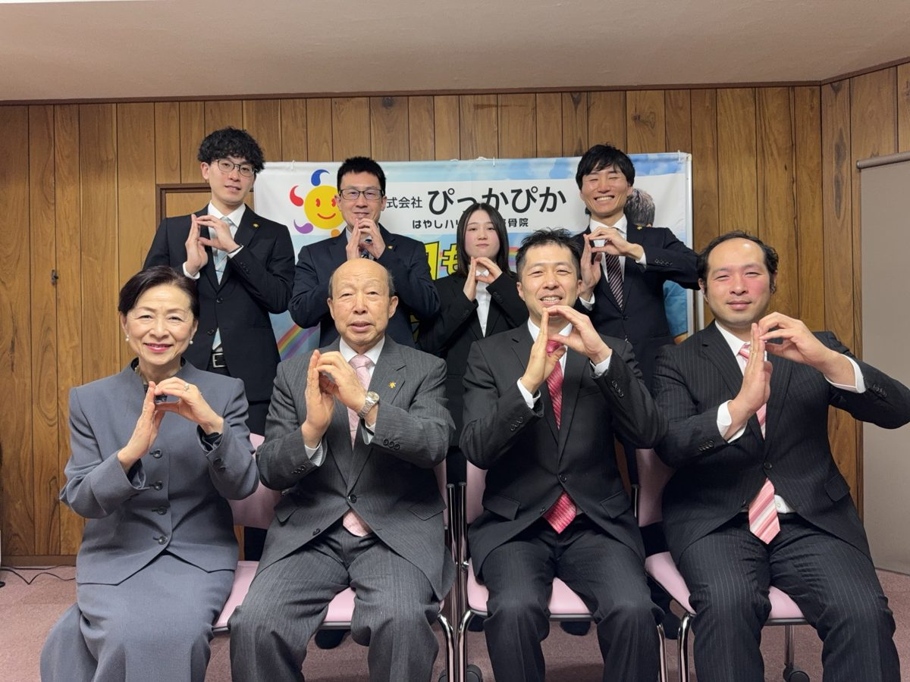
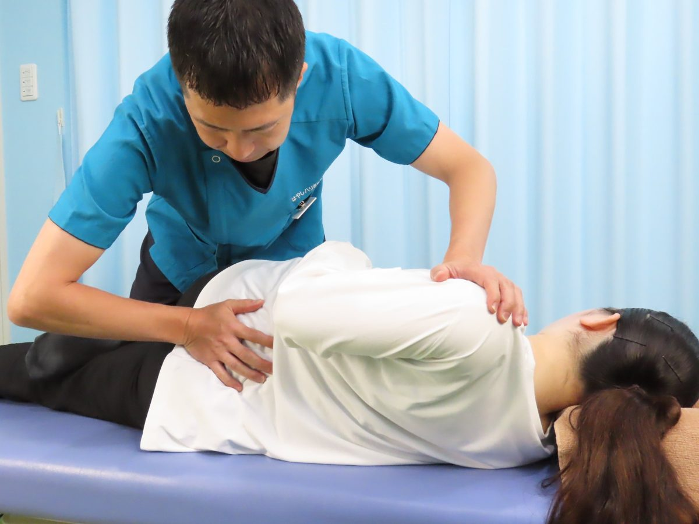
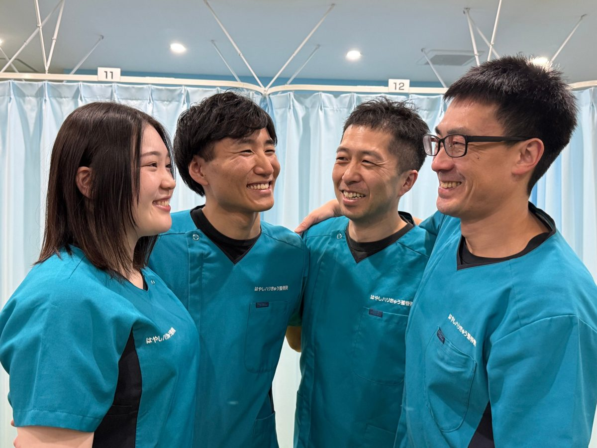
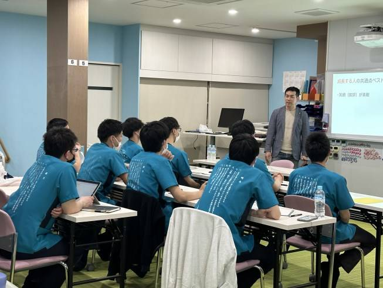
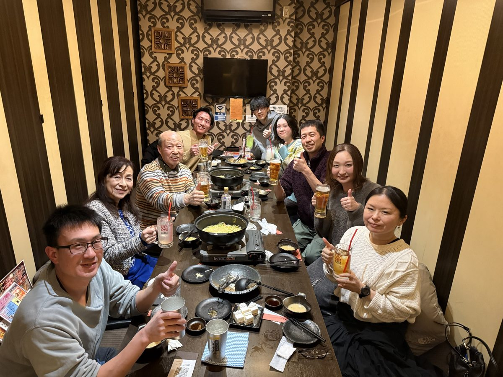
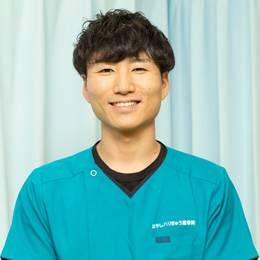
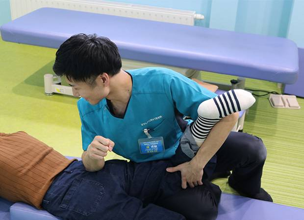

RECRUIT 柔道整復師・鍼灸師 募集
働く幸せ＝「やりがい・たのしさの充実」
1978年創業、北海道でも数少ない歴史のある整骨院で、一緒に働く柔道整復師・鍼灸師を募集しています。職場見学もできます。

働く幸せ＝「やりがい・たのしさの充実」
当院は創業者 林 紀博が1978年に創業しました。 北海道でも数少ない歴史のある整骨院になります。
弊社で最も大切にしている事は 働く幸せ＝「やりがい・たのしさの充実」です。 人生では約31万時間を仕事の時間に費やすことになります。 ですので、働くことに幸せを感じなければ人生を損していると思っています。
そこで、 ・仕事で成果による「やりがい」 ・仕事で成果を安定的に出せる技術の高さによる「やりがい・たのしさ」 ・プライベートの充実による「たのしさ」
これらを充実させてこそ「働く幸せ」が手に入るものだと感じています。
- 年間休日107日（有給を合わせると最大117日）
- 有給取得をしやすい環境
- 業務中に行う勉強会が年間最大50回
- 入社3ヶ月以内に施術デビューでき、成果を出せる新入社員研修
- 公平性かつ無理を強いない評価制度
「やりがい・たのしさの充実」を叶えるために、弊社は環境を整えています。
弊社の信条は「すべては患者様のために」です。
患者様に日々全力で施術にあたれるようにスタッフの働く幸せを大切にしています。 そして何より、北海道で一番の「ホワイト企業化」を目指し日々進化し続けていきます。
患者様-スタッフ-会社のトリプルウィンを叶える会社を作り上げていきたいと思い常に行動し続けています。

株式会社ぴっかぴか 代表取締役
はやしハリきゅう整骨院 総括院長
林 恒博
「やりがい・たのしさ」をつくる【５つの特徴】
01
安心の待遇環境
弊社は年間休日107日、有給休暇を合わせると最大117日お休みできます。 4〜6月・7〜9月にそれぞれ1回ずつ、好きな時期に4連休を取ることができ、年末年始は7日間のお休みです。 まとまった休みも予定が立てやすく、安心して勤務することができます。 全正社員は、社会保険・厚生年金・雇用保険・労災保険はもちろんのこと賠償責任保険にも加入していますので、安心して施術に取り組むことができます。

02
確かな技術を身に付ける
主に骨ぴか矯正・筋ぴか矯正といった当院のオリジナル施術で行っています。 根本施術・体質改善・予防も含めて矯正で早期回復を目指しています。 弊社は年間50日間、全店舗の営業をストップさせて技術練習を行います。 技術教育の他にも問診や施術会話にも力を入れており、未経験者でも最短で習得し施術できる仕組みを構築しています。 仕事の【やりがい・たのしさ】のモチベーションは会社や先輩から与えられるものではなく、自身で作り上げるものと考えています。 技術力が向上することで、数多くの患者様に喜んでいただき、そこから【やりがい・たのしさ】のモチベーションが上がります。 それに併せて評価を得られることでランクアップし、報酬が上がる仕組みを作っています。

03
より良い人間関係が築ける
弊社では、いじめ・差別・虐待のない職場づくりを徹底しています。 理念にも仲間を信頼し、尊敬する。とあります。 仲間と協力して積極的に意見交換をし、分かち合い、認め合い、否定のない環境をつくることで互いに成長していける職場にしています。 入社時の研修でより良い人間関係を作るための方法を伝えます。 スタッフ同士の仲の良さが【働くたのしさ】に繋がります。

04
質の高い月1回のミーティング
弊社では、毎月第一水曜日に営業をストップし、全スタッフが本院に集合してミーティングを行います。当月の行動指針や理念浸透に加え、技術練習会などを中心に行います。 ディスカッション形式で行うミーティングにより、スタッフ同志の交流の場にもなり、お互いの信頼関係も築けます。 外部講師も呼び講義することもあります。

05
定期的にイベント開催
弊社のイベントは定期的に開催され、殆どが志事中に行われます。 社員飲み会・新入社員歓迎会・望年会など年に数回開催されます。 志事を本気でやる！息抜きも同じように本気でやる！ これが弊社のスタイルです。 スタッフ全員で楽しさを共有しています。

マネージャー 梯 秀輔から一言
入社した時は左右もわからない若輩者でした。会社からチャンスを頂き、スタッフリーダー、副院長、分院長となり、11年目になりますが、マネージャーに昇格することができました。たくさんの気づきや学びを頂いたからこそ今の自分があると思います。物理療法ももちろんですが、骨格矯正がとても深みがあり、何十年も変わらなかった症状が良くなったと言って頂いた時は感慨深いです。患者様に喜んでいただきながら毎日楽しく仕事をさせてもらっています。
今後は自分の経験を活かし、スタッフがやりがいや楽しさを感じられるようなサポートを行い、多くの患者様を良くできる院として強くしながら、皆さんの人生を充実感で満たせるような会社にしていきます。人生1度きり、将来の自分から「良くやった！」と言ってもらえるような努力と後悔をしない選択を行い、会社、スタッフ、患者様の幸せに貢献します。最高の人生にしていきましょう。どんな時でもサポートし、成長に貢献します！一緒に盛り上げていきましょう！

募集要項
| 募集職種 | 柔道整復師・鍼灸師・整体師 |
|---|---|
| 募集人数 | 2〜4名 |
| 仕事内容 | 整骨、鍼灸、トレーナー、骨格矯正、筋肉矯正、美容鍼、ＥＭＳ、ハイボルト、ショックマスター |
| 基本給 | 柔道整復師 270,000円（固定時間外手当 60,811円／40時間分を含む） 鍼灸師 270,000円（固定時間外手当 60,811円／40時間分を含む） 柔道整復師・鍼灸師 両方の資格 300,000円（固定時間外手当 67,568円／40時間分を含む） 研修期間3ヶ月 240,000円（固定時間外手当 45,284円／32時間分を含む） 有給休暇は入社時から パート（週3日以上）時給1,131円〜 |
| 諸手当 | 交通費（上限10,000円）、車通勤（上限10,000円）、ユニホーム貸与、骨格矯正手当、特別能力手当、キャリアアップ手当 |
| 昇給 | 都度評価制度による |
| 賞与 | 年1回（前年売上による） |
| 保険 | 健康保険、厚生年金、雇用保険、労災保険、賠償責任保険 |
| 福利厚生 | 社会保険完備、外部研修支援、社員研修、社員旅行、各イベント |
| 勤務地 | はやしハリきゅう整骨院 江別本院（江別市元町32-1） |
| 休日 | 公休 月9日（2月は8日）、4連休を年2回（4〜6月・7〜9月に1回ずつ、好きな時期に。それぞれ1日は計画有給）、年末年始7日（うち2日は計画有給） |
| 勤務時間 | 月〜日・祝 9:00〜13:00／15:00〜20:00 |
| 残業 | 月平均20時間（固定時間外労働をフルで使うことは推奨していません） |
| 研修 | 毎週水曜午後に技術練習 |
| その他 | 産休、育児休暇、介護休暇、看護休暇 |
今後の会社展望
- 20時30分までの絶対退勤制度
- 評価制度を採用してランクアップの視える化
- 女性スタッフを増員し、女性患者様への多様な施術のアプローチ幅を増やす
- 複数の働き方の選択を設置し、評価制度と合わせて一人一人望んでいる形に近い働き方を選択できるようにする
- 2031年までに追加3店舗の展開を目指し、会社の発展を目指す
- 救護班やトレーナーなどのスポーツに携わる部門展開
理念・治療理念
- 志事を通して人に愛と感謝の想いを伝える
- ForYou精神で関わる全ての人に幸せを与える
- 「笑顔・頷き・褒める」＋「返事・挨拶」の五原則を徹底する
- 常にスキルアップを志し、ハイクオリティな施術を目指す
- 当たり前な事を当たり前に行う
- 夢や目標を見失うことなく幸動する
- 仲間を信頼し、尊敬する
- 家族を大切にする
会社と共に未来を豊かにする 大切なことは志事を通して 目の前の人を幸せにすること

治療理念
患者様の症状には必ず理由があり、その症状がある 理由のない症状はない 深く探求し、プロセスを重視したプロとして症状を見極める 患者様は一分一秒の命の時間を使い治療を受け、私たちも一分一秒の命の時間を使い治療をする その貴重な時間を決して無駄にせず、常に感謝を忘れない 治したい！という意思ではなく私たちが必ず治す！という強い願望の意志を持つ どんな時も決して諦めず、必ず治す！という信念を貫く その想いが患者様に届く時、初めて患者様はここで治す！ここで治したい！と確信する
私たちは必ず治す！と自分に誓う 私たちは必ず治す！と仲間に誓う 私たちは必ず治す！と患者様に誓う 私たちは必ず治す！という想いを最幸最大に活かし切ることを誓う
なぜなら私たちは必ず治すことができる最幸に価値のある治療家であるカラダ
治療家としてどうあるべきか ひとりひとりの患者様へ 何を想い何を感じ施術をするべきか
代表プロフィール 林 恒博（はやし つねひろ）
- 1981年3月22日生まれ
- 柔道整復師・鍼灸師
- 株式会社ぴっかぴか 代表取締役
- はやしハリきゅう整骨院 総括院長
- 恵庭南高校体育科卒業 男子新体操部所属
- 全国高校総体 男子新体操個人種目別2位
- 国士舘大学体育学部体育学科卒業
- 男子新体操全日本選手権大会 優勝三連覇
- 北海道柔道整復専門学校卒業 国家資格取得
- 北海道鍼灸専門学校卒業 国家資格取得
- オリジナル骨格矯正「骨ぴか矯正」開発
- オリジナル筋肉矯正「筋ぴか矯正」開発
- 2018年9月～2019年9月 STVラジオ 工藤じゅんきの十人十色にて「はやし先生の！健康いきいき！」のコーナーを持ち放送（日本初）
- 2020年～北海道ハイテクノロジー専門学校 柔道整復科 物理療法担当非常勤講師
- 2023年8月全国高校総体新体操大会 救護班長を務める
- 2024年 北海道体操連盟・江別体操連盟 新体操部門 専属救護
- 患者様のために骨格・筋肉・神経の研究を行い技術開発を行っている
応募方法
入社前の職場見学も可能です。
学生の方・既卒の方・ブランクのある方も、お気軽にご相談ください。
まずは職場見学から
はやしハリきゅう整骨院 江別本院（株式会社ぴっかぴか）採用担当